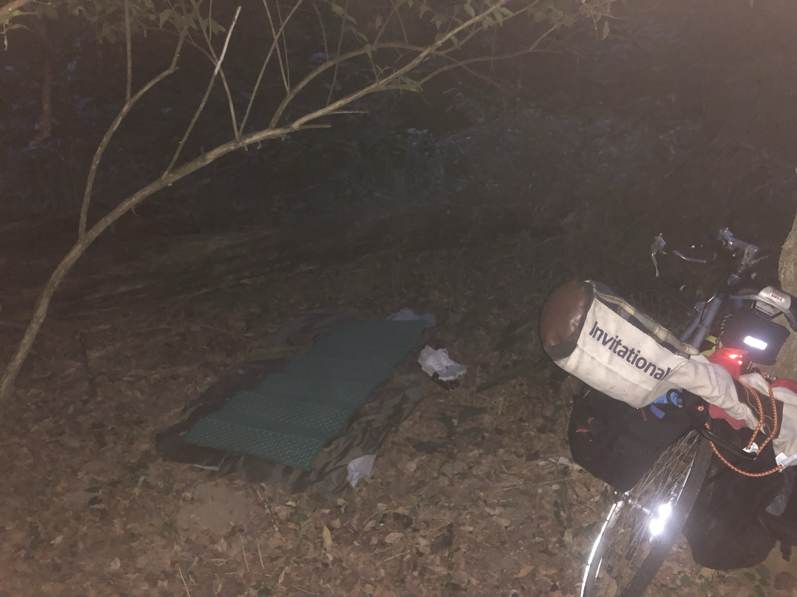
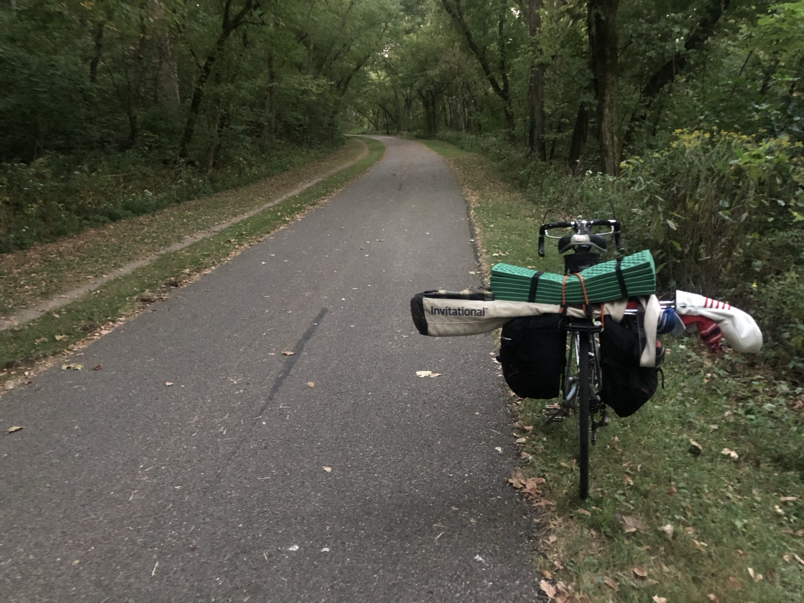
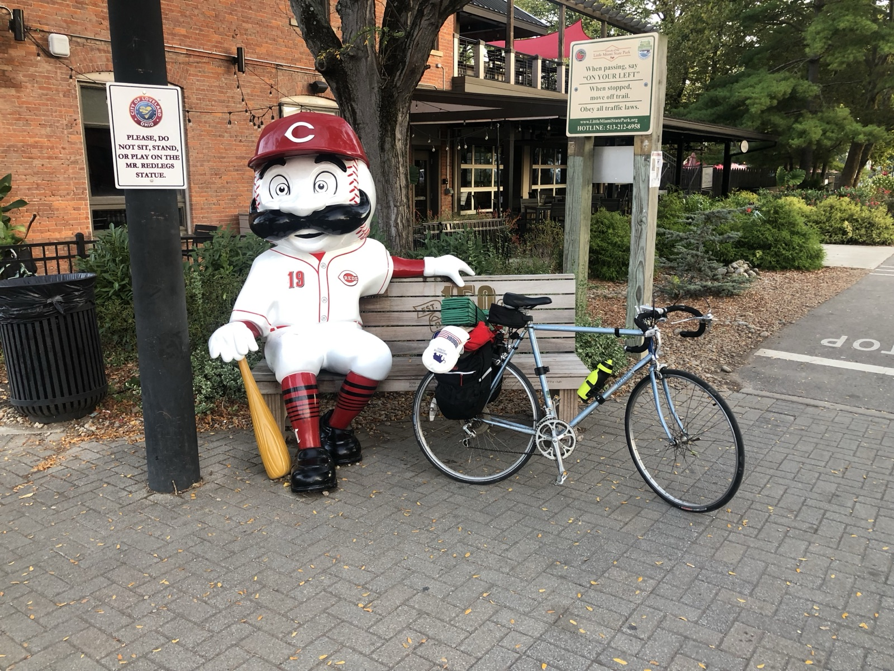
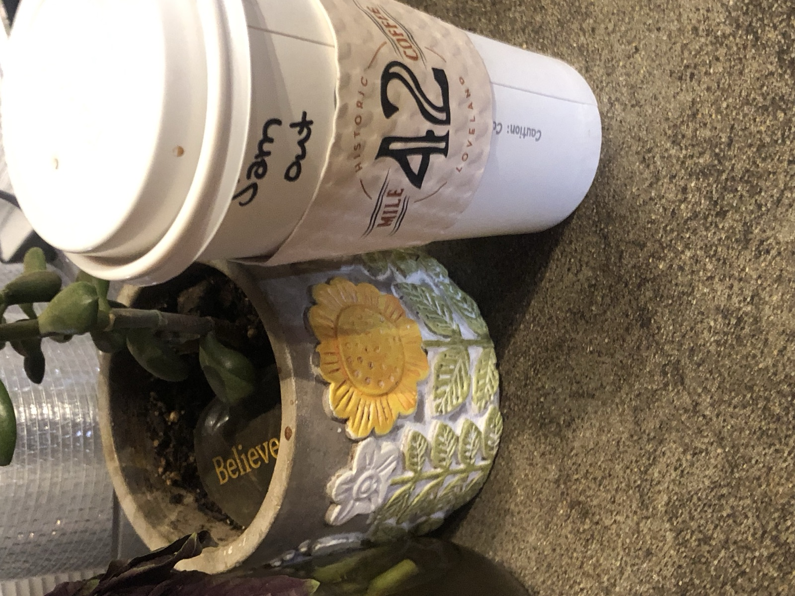
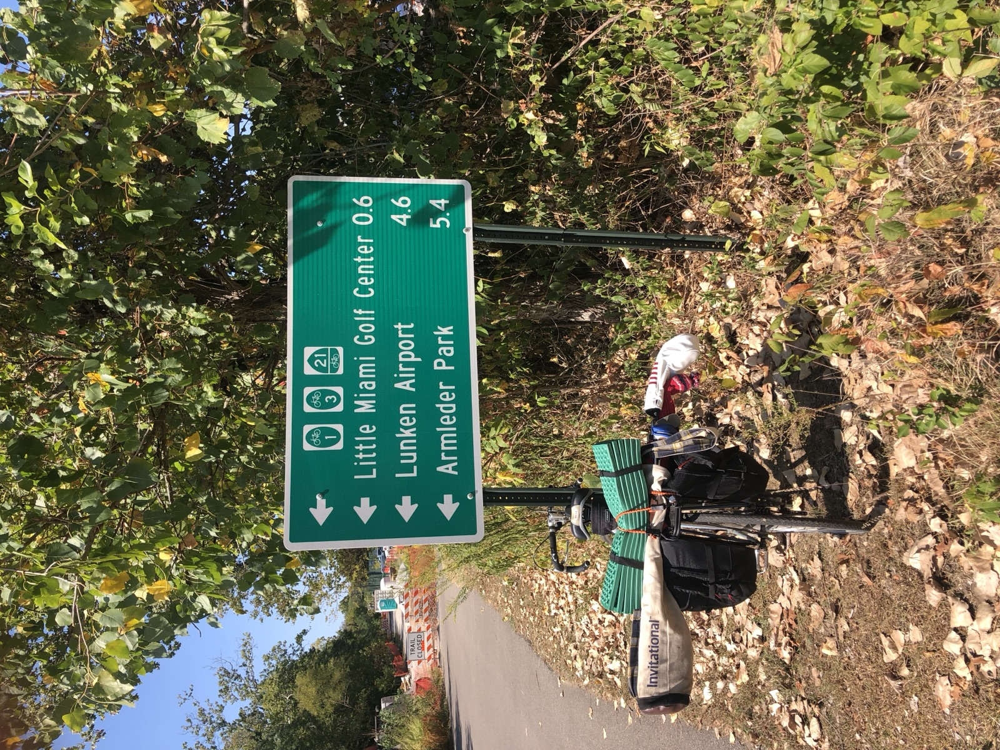
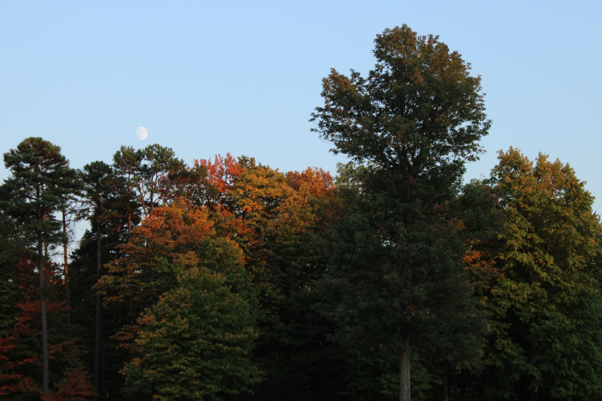
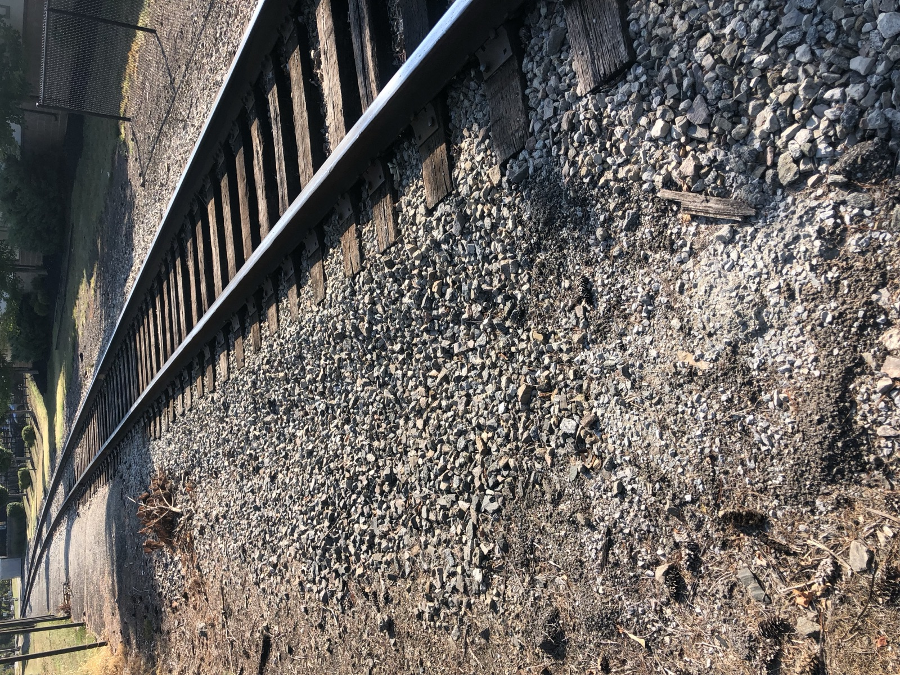

Half Set Side Quest | Hickory Woods
October 9, 2024
Prior to the days of coffee Sportscenter was our caffeine.
Gabe and I crowded the TV for an hour, or two, every summer morning. Neil Everett and Stu Scott led an hour-long journey through the world of sports we weren't disappointed to go on a second time. Once we got our fill, we organized neighborhood wiffle ball games, playing as if our lives depended on it alongside those who watched the same segment.
In between the bean balls, grass stains, and controversial calls, we debated which NBA team would make it to the playoffs and discussed our little league games that night. It never got old. Our fun was eventually interrupted when our moms called us in for dinner, giving us a brief breather before the evening's game.
As kids, it's easy to assume that every day will mirror the last, filled with the same carefree flow. However, one summer morning, everything changed when I received a text from my friend Patrick: "Do you want to play golf at Hickory?" Golf? I always thought it was a sport for old guys who swore and smoked cigars. I looked to my mom, perplexed.
"Yeah, I guess you guys can go and play," she said.
Hickory Woods Golf Course in Loveland, Ohio has been a staple to my family since we moved to the Cincinnati area. It hosts our charity outing every year. Gabe and I rode around on carts as kids and eventually joined in a family member's group. I never thought I would play golf outside of this event or the school rec league.
The thought of a few hours of independence as a 13-year-old was exhilarating. I hurried upstairs to put on a golf shirt and hat, grabbed my clubs from the basement, and made sure the bag had enough balls. As I sat in the front seat of the car, my mind danced with the ecstasy of the new experience.
After my mom dropped me off, I used some lawn-mowing money to pay for the round. We rolled putts on the practice green, pretending to know what we were doing.
When it was finally our tee time, we passed the clubhouse and made our way to the first tee. I set my bag down, and the world came to a halt. The tee box became a portal where time stood still. A blend of excitement, anticipation, and healthy competition enriched our conversations while amplifying the silence around us.
The silence , the whoosh of the club head, the wind slaloming through the trees, and my internal dialogue oscillating between frenzy and a zen-like state. I looked down the tree-lined fairway all the way up to the green. Everything in front of me slowly became nothing as I took the clubhead back.
What is this feeling?
For the past decade, I've spent my life trying to answer it, to no avail.
That question lingered through grade school matches where I schlepped my bag with a boot on my right leg. It was present during high school matches and van rides. Even while poring over books on golf course architecture and design, there it was. It has taken me to work on courses in the dairy fields of rural Wisconsin, beaches of South Florida, and suburbs of Central Ohio. Each experience led to the next, revealing that the deeper one goes, the more open-ended the questions become.
After recently spending some time on the road and off the grid, one question continually echoed in my mind: What is the possible future between rugged, nature-based adventure and the game of golf?
It was time to begin exploring the idea.
I called Mike Auterson, head pro at Hickory Woods, early Saturday morning. Mike has turned into a family friend as he has helped out with the outing all of these years. After booking a tee time, I shared my ideas and posed the same question to him.
"So I started off my career at Camargo. I remember one day members told me about this crazy multi-day trip they did in Montana. They got dropped off in the wilderness by helicopter, camping at night and playing golf all day."
"If you're asking to camp at the course, I can't let you do that due to liability... That member at Camargo was 20 years ago, you're the first person that's mentioned it since. You know people that like to camp like to camp and people that like to golf like to golf. But hey, Sam, golf is on me tonight. See you soon."
Preparing for this round looked different. I kept my car keys in my room and opted for my 10-speed bike instead. One saddlebag was stuffed with a sleeping bag. The other contained a pillow, ground cover, headlamp, and camera. I used borrowed bungee cords to strap my half set of golf clubs and sleeping pad to the rear rack. Once again, I questioned my sanity and took off.
What will people think? What am I doing with my life? Where am I going to sleep?
These thoughts screamed in my head, but my curiosity was somehow louder.
Golf can often be viewed as a segmented activity, wedged between work, sleep, meals, and social life. There's a clear starting point once you arrive at a course and a finishing point when you leave , on to the next thing.
But what if the round of golf fell into the background of a larger outdoor journey? A journey that utilizes underappreciated long-distance transportation , biking, kayaking, etc. , to immerse oneself in the terrain covered and the towns passed through? Upon arriving, the journey transitions into a traverse across the golf course, culminating in a night spent cowboy camping among the elements, only to return the next day and resume life.
Ohio's mellow landscape is perfect for biking. After leaving home and pedaling through the towns of Madisonville and Mariemont, I entered onto the trail ready to explore.






